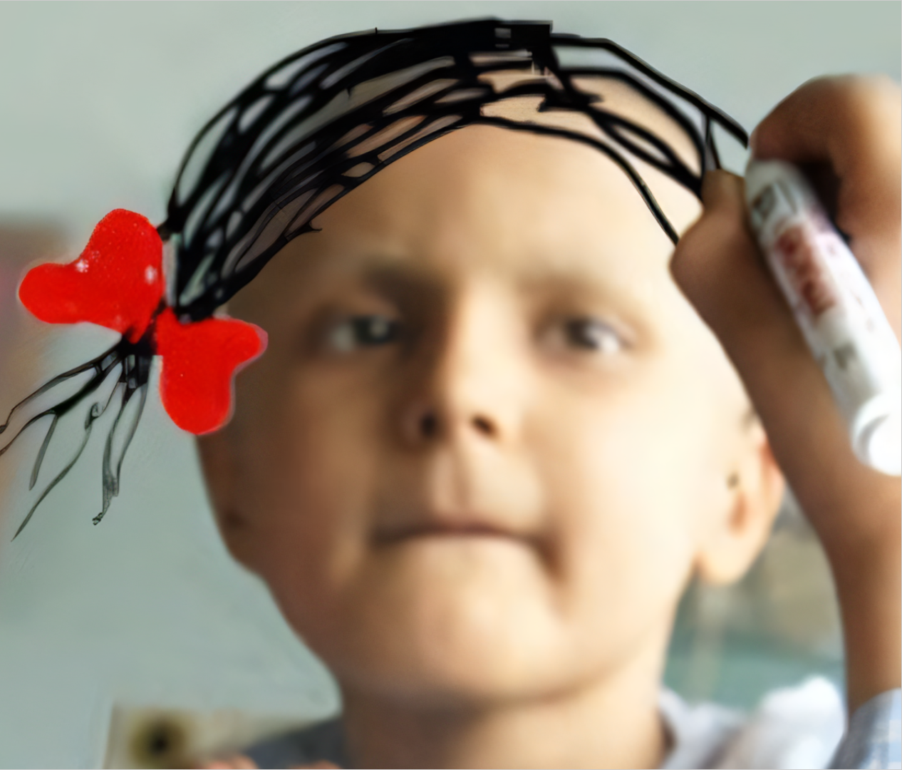
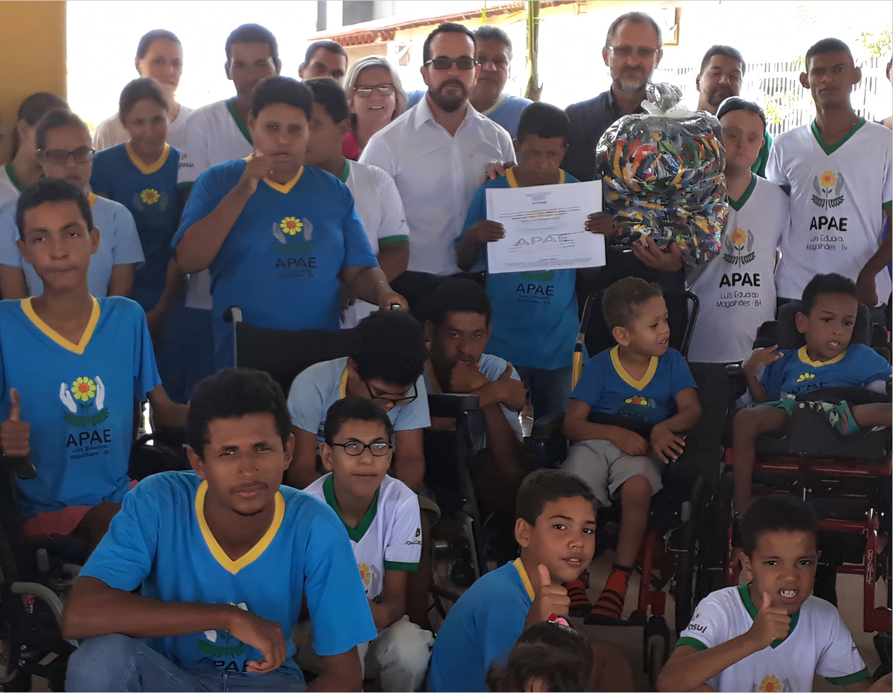

Mais Vida
O Mais Vida acolhe adultos e idosos em tratamento de câncer, oferecendo apoio psicológico, nutricional e outros, além de promover campanhas de prevenção e sensibilização para o apoio a pacientes e familiares.
Cartinha Mágica
O projeto social Cartinha Mágica atende todos os anos crianças que estão inseridas em famílias que vivem em vulnerabilidade social na cidade de Itu e região.

APAE
Fundada por pais e com apoio religioso, a APAE de Salto oferece atendimento terapêutico e escolar para pessoas com deficiências intelectuais e múltiplos, visando sua autonomia e integração comunitária.